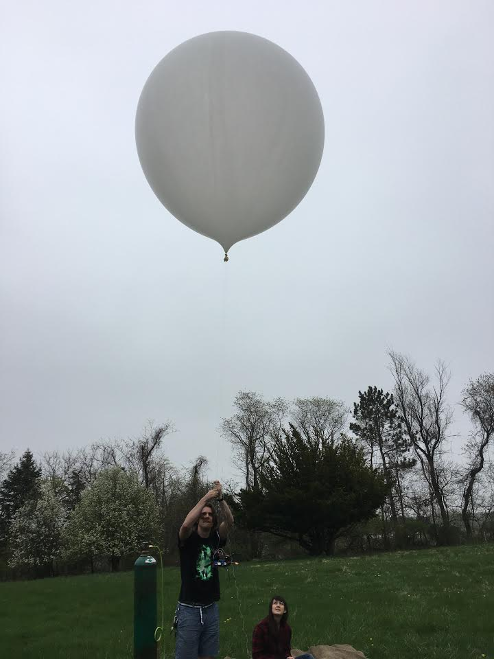

About
What is Project Iris?
With the goal of providing Internet communications to people in remote and underdeveloped locations, we started developing a platform that had the following specifications:
- 100% Renewable Energy
- Communication Range > 3 miles
- Flight Duration > 6 hours
- Easy Deployment for Users (less than an hour)
- Infrequent Maintenance (less than once a month)
- Relatively Affordable (<$2000)
Project Focus and Design
- Project Goals
- Heating and Controlling the Balloon
- Data Collection and Communications
- Final Design
Originally we wanted to design a solar powered hot air balloon that would be completely self sustainable and provide communications to the surrounding area. The balloon would use solar panels to power the heating element, sensors, and the communication device. The balloon would have also had a control system that would maintain the balloon's altitude and lateral position. Essentially the project can be broken into two distinct parts:
Due to time and financial constraints, we aimed to create a platform that demonstrated the ability to wirelessly communicate across some distance. The system consisted of a tethered helium balloon and the attached platform, which housed various sensors, a battery, and Xbee communications.
